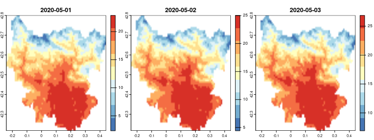
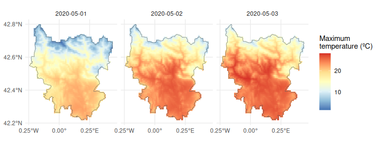

Easy access to high-resolution daily climate data for Europe
Get high-resolution (1 km) daily climate data (precipitation, minimum and maximum temperatures) for Europe from the European climatic database hosted at University of Natural Resources and Life Sciences, Vienna, Austria. Data are currently available from 1950 to 2022.
This climatic dataset was originally built by A. Moreno & H. Hasenauer and further developed by W. Rammer, C. Pucher & M. Neumann (see this document for more details on the development and characteristics of the climatic dataset, and this document for the updates of the last version - v4).
In this R package we implemented Cloud-Optimised Geotiffs so that we can obtain daily climate data for thousands of sites/days within seconds/minutes, without having to download huge rasters. But if you need to obtain data for large areas, please download the rasters from the FTP server (ftp://palantir.boku.ac.at/Public/ClimateData/) and extract the values locally rather than using this package, so as not to saturate the file server. For that, you may use a FTP client such as FileZilla.
For a detailed description of {easyclimate}, please read this paper (open access version here) or visit the package website.
Installation
# install.packages("remotes")
remotes::install_github("VeruGHub/easyclimate")Examples
Obtain a data frame of climatic values
To obtain a data frame of daily climatic values for point coordinates:
library(easyclimate)
coords <- data.frame(lon = -5.36, lat = 37.40)
prec <- get_daily_climate(coords,
period = "2001-01-01:2001-01-03",
climatic_var = "Prcp",
version = 4) # default| ID_coords | lon | lat | date | Prcp |
|---|---|---|---|---|
| 1 | -5.36 | 37.4 | 2001-01-01 | 8.30 |
| 1 | -5.36 | 37.4 | 2001-01-02 | 0.00 |
| 1 | -5.36 | 37.4 | 2001-01-03 | 3.38 |
Obtain a raster of climatic values
To obtain a (multi-layer) raster of daily climatic values for an area:
library(terra)
## Download the polygon contour of a region
sobrarbe <- mapSpain::esp_get_comarca(comarca = "Sobrarbe")
## Coordinates must be in lonlat
sobrarbe <- project(vect(sobrarbe), "EPSG:4326")
## Download Tmax values for that region between 1st and 3rd May 2020
sobrarbetemp <- get_daily_climate(
coords = sobrarbe,
climatic_var = "Tmax",
period = "2020-05-01:2020-05-03",
output = "raster"
)The output (sobrarbetemp) is a SpatRaster with 3 layers (for each of 3 days):
sobrarbetemp
#> class : SpatRaster
#> dimensions : 70, 82, 3 (nrow, ncol, nlyr)
#> resolution : 0.008333333, 0.008333333 (x, y)
#> extent : -0.2416667, 0.4416667, 42.21667, 42.8 (xmin, xmax, ymin, ymax)
#> coord. ref. : lon/lat WGS 84 (EPSG:4326)
#> source(s) : memory
#> names : 2020-05-01, 2020-05-02, 2020-05-03
#> min values : 2.34, 4.42, 6.91
#> max values : 22.89, 25.03, 26.87Let’s make a map. First using terra:
plot(sobrarbetemp, col = rev(RColorBrewer::brewer.pal(9, "RdYlBu")),
smooth = TRUE, nc = 3)
Now using ggplot2 and tidyterra:
library(ggplot2)
library(tidyterra)
ggplot() +
geom_spatraster(data = sobrarbetemp) +
facet_wrap(~lyr, ncol = 3) +
scale_fill_distiller(palette = "RdYlBu", na.value = "transparent") +
geom_spatvector(data = sobrarbe, fill = NA) +
labs(fill = "Maximum\ntemperature (ºC)") +
scale_x_continuous(breaks = c(-0.25, 0, 0.25)) +
scale_y_continuous(breaks = seq(42.2, 42.8, by = 0.2)) +
theme_minimal()
Visit the articles of the package website for more extended tutorials!
CITATION
If you use easyclimate, please cite both the appropriate data source and the package as:
Moreno A, Hasenauer H (2016). “Spatial downscaling of European climate data.” International Journal of Climatology, 1444–1458. https://doi.org/10.1002/joc.4436.
Pucher C, Neumann M (2022). Description and Evaluation of Downscaled Daily Climate Data Version 3. https://doi.org/10.6084/m9.figshare.19070162.v1.
Pucher C (2023). Description and Evaluation of Downscaled Daily Climate Data Version 4. https://doi.org/10.6084/m9.figshare.22962671.v1.
Cruz-Alonso V, Pucher C, Ratcliffe S, Ruiz-Benito P, Astigarraga J, Neumann M, Hasenauer H, Rodríguez-Sánchez F (2023). “The easyclimate R package: Easy access to high-resolution daily climate data for Europe.” Environmental Modelling & Software, 105627. https://doi.org/10.1016/j.envsoft.2023.105627.